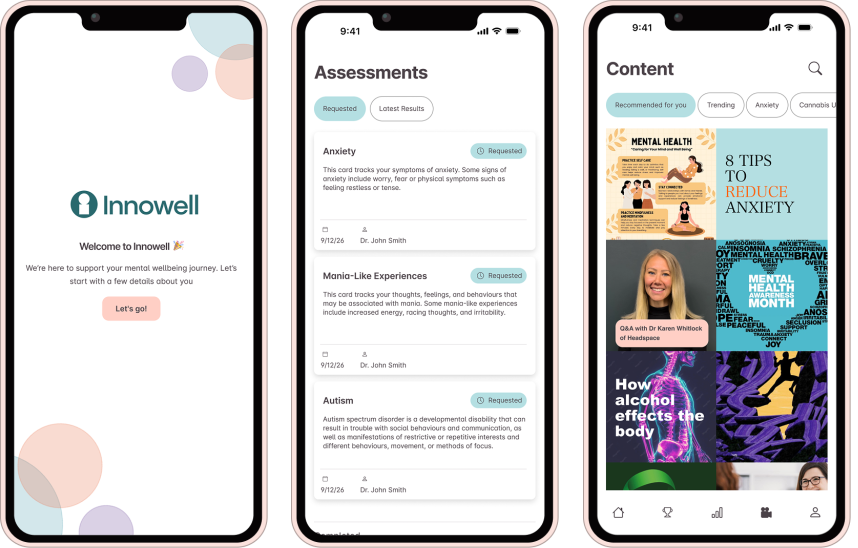
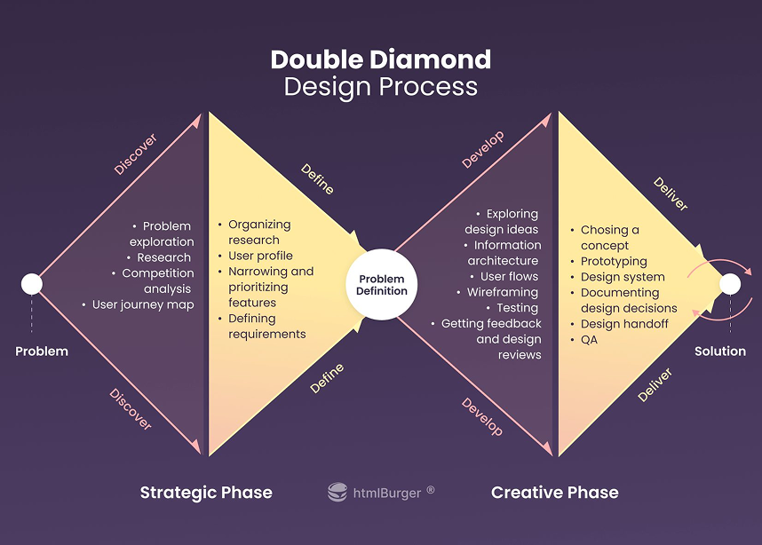
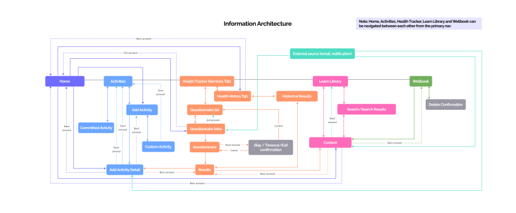
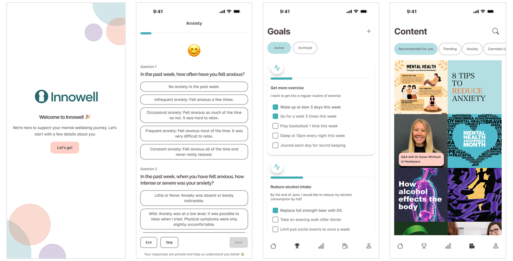

Innowell+
INNOWELL
The Innowell+ mobile app is targeted at patient’s who present to a mental health service but are deemed, at
that stage, not severe enough to require urgent treatment from a professional. Instead, these individuals are
encouraged to use Innowell+ to self-manage their wellbeing in the hope their condition does not escalate and
ideally, eventually not requiring professional help at all.
By triaging waitlists with Innowell+, we aim to
reduce waitlist times and ensure the right people get the right care. The key to the success of Innowell+ is
leveraging our knowledge of the patient to create the most personalised experience possible.
Challenge
The product challenge is that Innowell+ needed to serve as a clinically validated, self-manage mental health app - almost like a companion with clinical knowledge. To do that, we needed to be able to build a profile of the patient from the data we had including demographics, assessment answers and life situation. Once we were able to build a context around a patient, we could then present more relatable content, ask more insightful questions and even create prediction models thus making Innowell+ personalised to every user.
To me, the importance of creating a rock-solid patient context was great but it also needed to evolve with the patient. For example, if the patient's questionnaire demonstrated a spike in alcohol use along with a life event of acquiring a new job, Innowell+ should be clever enough to dive deeper to uncover insights if the two are related then ideally suggest related content, goals or support resources.
With future plans of AI tooling (scribe and automated care plans) building out this patient context is paramount to producing a strong foundation for these features to succeed.
The look and feel challenge: given that most of our users would be experiencing some kind of mental health issue, I wanted Innowell+ to evoke a sense of calm and softness and that they felt safe and unalarmed while using the app. Therefore, I opted for a muted palette with pastel colours with a modern, sans-serif typeface. User testing showed that 88% of participants like the pastel colours and 100% of participants liked the use of emojis.
Navigating Innowell+ should feel like any other native app, so the challenge was to determine the information architecture model to help me understand when to use a primary page, secondary page, bottom sheet or modal. Applying rules to each of these page components will help structure the app, minimising navigational errors and leading to a better user experience.
Finally, the overall feel of the app should be smooth, and relaxed, meaning use of subtle eases for animations and transitions without being over the top.

Workflow
Transitioning from a multinational corporation to a startup, I loved the opportunity I was presented with to have more of a voice in product direction and guiding the development of the strategy. Being deep in the trenches, pushing boundaries and working with a team that challenged each other with respect resonated with my work style.
One of my favourite methodologies is the Double Diamond Approach. It’s a strategy that can be adapted to products or features of any size and in my experience, when done right, has amazing results. The model has two diamond shapes to show when to broaden thinking and when to converge thinking.

The first diamond is about defining the problem, or the discovery phase. As the diamond diverges, this represents understanding users general patterns, exploring problems and collecting as much information as possible. Upon completion, as the diamond begins to converge, this is when we start to take all the information, formulate a problem statements and begin to define features and requirements
My discovery phase started with internal sessions with the CPO and PO to outline what Innowell+ aims to solve, before heading out to research and validate in the market. My preference was qualitative research with small numbers (less than 5), it allows me to really focus and go deep with the participants to unearth insights. Planning for the sessions, I needed to determine our hypothesis so we could measure what we were testing - for this particular project, we wanted to test if the mobile app would help reduce waitlist times. These sessions were great to help me understand what users want and how they think, and sometimes they became co-design sessions.
The converging of the first diamond was reporting back to the CPO my findings. We would associate features to each of the problems uncovered, then prioritise them based on complexity, what we could leverage and what best solved our hypothesis.
Once we understood the priorities and our direction, the second diamond is about the execution. Taking the first priority from the discovery phase, the aim is to narrow down to a design solution and determine how is it going to be executed.
As the second diamond diverges, this represents planning the information architecture, design explorations and user feedback testing of the first priority. For Innowell+, our first priority was the home screen as this gave us an entry point to the other features - so I began my design explorations and user testing.
The final converging of the second diamond represents the delivery phase, taking the solution and preparing it for build. After presenting my process, research and outcomes to the Product Team and we were aligned, it was time to open the feature up to the developers for any feedback - usability or technical. This stage was something I had pushed for as I believe it is important for the developers to understand not only what we are building but why.
The Double Diamond process was repeated for each of the prioritised features, bringing structure and confidence to the design process and generally, providing evidence for the Product Team’s decisions.

Once the Double Diamond process is complete and the team were clear on the direction, it was about getting the assets and resources ready for the build. There were usually three main assets that I would provide:
-
UI
High-fidelity UI designs/prototype in Figma, including updating the Design System. Pixel-perfect is required here so the developers could easily build using Figma's Dev-mode. Leveraging AI, in particular Figma Make and Claude, I ran accessibility tests to ensure everything was WCAG compliant. -
Confluence Document
Created in Confluence, this document would outline the why, what and timeline for the build. Creating this document was my way ensuring everyone (from the CEO to our sales team) had eyes on our progress. -
User Stories
Breaking the feature down into different sections, I would write up user stories in Azure DevOps, outlining in fine detail and adding screenshots to ensure developers and testers had the path of least resistance to complete their job.
Of course, I am not perfect and there would always be an edge case or a requirement I had missed. Having a good relationship with the developers and working closely with them during the build, we quickly ironed out any missing requirements and/or confusion.
Features
The core features Innowell+ was to launch with were Assessments, Goals, Content and Health History. Through our research, it was deemed these as the most important features for a patient to self-manage while waiting to see a clinician.

-
Assessments
Having the clinically valid assessments was a no-brainer, without these it would be extremely difficult to benchmark a patient’s mental health. Implementing the assessments was easy, finding the right UX was the challenge. Our research showed that the current implementation was too long and repeated questions did not make sense, for example if a patient provided an answer for the question ‘At what age did you first get drunk?’, this question should not be asked again. So, part of this feature build would be to include logic to streamline the assessments. -
Goals
Goals are a heavily used tool by caregivers to motivate their patients to improve and track their progress. Following the SMART framework, I had to consider two flows for goals - goals created in conjunction with a clinician and goals created only by the individual. This was an important distinction as we did not want the user to be locked in to only one of those paths.
One of the biggest discoveries in my research found that goals were being administered manually, with pen and paper, meaning they were susceptible to being lost or damaged and also there was an increased privacy risk. Having a digital version of goals makes it easier for the user to manage themselves but it also means Innowell+ now has more data to build the patient’s context. -
Content
This was one of the most interesting features for me. If we could create a seamless experience while providing relevant content, this was our chance to be genuinely useful for our users and keep them coming back. Borrowing the well-adopted Instagram model, my solution allowed users to browse content as a grid or swiping through content that had been tapped into.
We engaged a third -party organisation that focuses on creating digital content around mental health and their content could be integrated with our solution quite easily. -
Health History
Similar to Assessments, this feature was a requirement. Tracking the patient’s assessment answers and displaying them in an easily digestible manner gives the user an overall view of the mental wellbeing journey, all in one app. Health History results needed o be downloadable and there needed to be a way to view all past answers.
The last feature that is not visible, is using all the data from these features, along with the patient’s demographics, to constantly keep the patient’s context up to date. If we do this right, that means we will be suggesting relevant content, relevant goals and providing the most personalised app to help improve people’s mental health.
Figma Prototypes
Explore the Figma prototypes to for each of the Innowell+ sections listed above. If the Figma embed below does not work, you can click here to view the prototype in a new tab.
Outcomes
One of the largest issues Mental Health services face right now is that demand outweighs supply, there are more and more people suffering from mental health issues and less clinicians and less funding - some services are reporting having six month waitlists.
Our clients across Australia and Canada quickly adopted Innowell+, including The University of Sydney (AU), PwC (AU), Headspace (AU), Douglas (CA), EACH Services (AU) Alberta Health Services (CA) and London Health Services (CA), reporting demonstrable success:
- 60% reduction in service waitlist times.
- Over 2,000 goals set within first month of release
Our structued and data-led approach demonstrated that thoughtful product design can effectively triage waitlists and bridge the gap between self-care and professional clinical intervention, reudcing waitlist times and paving the way for scalable mental health support.